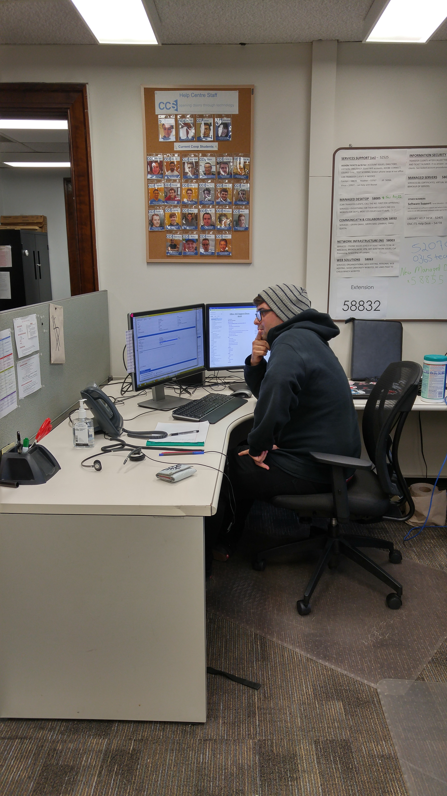

Job Description
Here is the job description posted on the job ad before my application:
"As a Student Consultant you will work closely with CCS IT staff to provide technical troubleshooting, IT information and IT solutions to our clients within the University. In the Help Center and at the IT Help Desk you will answer questions about CCS Services and applications, supported products and a wide variety of computing issues including network connectivity, email software/Gryph mail and virus/malware problems. As a Student Consultant you will be exposed to technology and IT service areas including Network Infrastructure, Security, Directory Services and a number of campus-wide applications. This position provides staff with the opportunity to develop critical customer service skills, analytical and troubleshooting skills. Student Consultants will also assist with the creation of customer and web documentation and there may be opportunities to work on special projects with other CCS teams."

At My Old Desk
The above description gives a basic representation of what it is like to work at the CCS Help Centre. One large thing that we did not expect as the co-op team is that so much would be changing at the University over the summer while we were in the first four months of our co-op term. The University had a large mail migration of all the staff and grad email accounts to Office 365, which proved to be a huge task to support as we were thrown into this new email system, which we had to learn so that we could answer any questions related to this. With the support of our supervisor Jill we were able to make it through the other side extremely knowledgable in the basic and advanced use of the new mail system.

Software Burning Station
A few other changes we had to support were the modification of guest wifi at the University and the implementation of wifi in the residences for all the new students starting in the fall. This entailed learning some new processes and devices, namely the new AP's that were installed into the rooms. One skill needed for this job was adaptability which we definitely learned on the job as we worked with the support of full time staff and each other, we were able to take anything in stride and support all clients, no matter how upset they were at the various changes made at the University.

Help Centre
The main form of communication we had with clients was phone and email through a ticketing system. These were not too hard to use and we learned very quickly. This enabled us to focus on the actual problem solving and how to communicate solutions in a way that our clients would understand. Throughout the day we would recieve many issues, including password resets/unlocks, internet/network troubleshooting, mail set up, adminstration tasks such as voicemail resets, and many more requests/issues. This required me to expand my knowledge in IT and diversify what I know to be able to help with any issue coming into the queue.